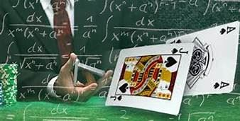
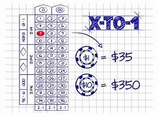
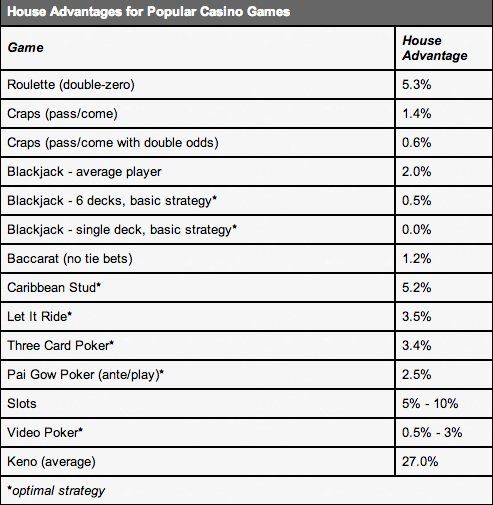

<template>
  <div class="MainContainer">
    <div class="TitleImg center">
      
    </div>
    <div class="single-wide">
      <h1>Gambling Mathmatics</h1>
      
      <p>The opportunity to play a casino game is a product that the consumer purchases with his gaming dollar. The view I take is that the player wants to have a certain experience when he sits at a game and is willing to pay for that experience by means of the inevitable bite the house edge takes.   </p>
      <p>To fully understand the product the player is purchasing requires a journey into the mathematics of casino games. Marketing must understand this material when developing effective strategies. Every part of a player’s interaction with a casino game has its own mathematics. Wagers have “odds” that determine how much to pay the player if he wins. The percentage of time the player wins is called the “hit frequency.” The “house edge” is the fraction of the player’s total initial wagers that the house expects to keep over the long run if the player uses perfect strategy. The “theo” or “theoretical” is the actual dollar amount the casino expects to win from the player. The “return to player” measures the fraction of the player’s total wagers the player is paid back in live casino play.</p>
      
      <h5>X-FOR-1, X-TO-1, 1-IN-X  </h5>
      <p>Most table game wagers are paid in an "X-to-1" fashion. What this means is that if the player wins the round, his wager is returned and he is paid an additional amount for his win. If the player loses, then his wager is removed from the table. For example, if the player bets on red-7 straight-up in Roulette then the payout is 35-to-1. If his wager is $10, then he either wins $350 (35 × $10) and his $10 is returned, or he loses $10. This type of pay is different from slot machines. For slots, every time the player pushes the button or pulls the handle, an amount is deducted from his credit balance. That's his wager. Then the reels spin, and when they stop he is paid an amount based on the pattern displayed by the reels by reference to some pay table. No matter what the outcome of the reels, the player’s original wager is forfeited. We say that  slots are "X-for-1."  </p>
      <h5>X-for-1</h5>
      <p>     Most wagers on keno, lotteries, slots and video poker are paid "X-for-1.” This confusion has been used effectively, for example, in blackjack slot machines. Blackjack slots typically show a payout of 2 credits when the player is dealt a blackjack. The player knows that blackjack usually pays 3-to-2, so this seems like a sweet deal. However, this payout is 2-for-1. Thus the player forfeits his original 1 credit and then wins back 2 credits if he is dealt a blackjack. The player nets 1 credit in this way. Thus 2-for-1 is the same as 1-to-1. Few would play the table game of blackjack if the payout for a blackjack was reduced to 1-to-1, yet people often play these slots with a payout of 2-for-1. The progressive wager in Caribbean Stud is an example of an "X-for-1" wager appearing in a well known table game. The player's wager is automatically collected as it is made, and a light illuminates on the table indicating the player has made this wager. Another common "X-for-1" wager is the bad-beat jackpot in the poker room. The pot contributes $1 each hand to the progressive; that money is forfeit. </p>
      <p>It is customary that wagers pay out "X-to-1” on a table game; examples of successful “X-for-1 wagers on table games are rare (one example are the hop bets in craps). Return the player's original wager if the player wins or pushes; otherwise collect the player's wager. Table games and slots are different animals and the most fundamental difference is that slots pay “X-for-1.” Some wagers in table games are very similar to slots. For example the Pair Plus wager in Three Card Poker has a straight pay table based on the three cards dealt to the player. It usually pays “1-to-1” for a pair, “3-to-1” for a flush, “6-to-1” for a straight, “30-to-1” for trips and “40-to-1” for a straight flush. This side bet could just as well be a slot, as it requires no strategy, but it would then have the rather strange looking pay table: “2, 4, 7, 31, 41.” </p>
      <h5>1-in-X  </h5>
      <p> Finally, the terminology "1-in-X" is commonly used, but not in the context of payouts. For example, in craps, the shooter will get a 7 (over the long run) 1-in-6 rolls. In double-0 Roulette, the number red-7 will come up (over the long run) 1-in-38 spins. The player is dealt a blackjack (over the long run) approximately 1-in-21 hands. The terminology “1-in-X” has nothing to do with how much a game pays for a winning wager. It is used to describe the rate of occurrence of an event at a table game. </p>
      <h3>HIT FREQUENCY  </h3>
      <p>The concept of "hit frequency" is best applied to games that pay “X-for-1” like keno, lotteries, slots and video poker. It is a little fuzzier when applied to table games, especially those with a strategy or multiple wagering opportunities. </p>
      <p>If the player is playing keno, the lottery, slots or video poker then the player makes a bet (say $1). That $1 is forfeit. It's gone. Now the only question is if he will get something back after the round has resolved. Sometimes yes, sometimes no. In the real world, nothing is exact. But to the mathematician analyzing these games, they can determine very exact numbers. We’ll use Keno as an example.  Suppose you are playing Keno and you mark 10 spots on a card with 80 spots. Suppose 20 balls are dropped in the Keno game. This is all very standard, exactly how Keno usually works in many casinos.  Now suppose the pay table for Keno awards some money back if you hit 3 or more of the 10 spots you marked. You always lose your original bet. It's gone. The question is if you get to collect anything at the end of the ball drop. It's time for decimals and percents. Don't ask me how I figured it out, but for this exact situation the hit frequency (probability of 3 or more hits) is 47.94%, or 0.4794. If we modify the Keno pay table so that it pays back only when you hit 4 or more of the 10 spots you marked, then the hit frequency is 21.20%, or 0.2120. If we have a payout any time 2 or more of the 10 spots are hit, then the hit frequency is 77.46%, or 0.7746.. </p>
      <p>For the Pair Plus wager, the number 25.61% is an exact number. The hit frequency is a theoretical number; it is computed by a mathematician. In practice, it gives a good sense for how the game will perform on the floor, but the game’s actual performance has nothing to do with determining the hit frequency. The hit frequency gives a sense of how often a player is going to get something back on his wager. Obviously a player wants to win as often as possible, so from the player’s perspective a high hit frequency is a good thing. Naturally, the player also wants high payouts. These two desires act against each other: giving the player everything he wants is impossible. A game that has a low hit frequency with high payouts may frustrate the player because he seems to lose and lose while waiting for a combination to occur that seems ever more unlikely. A game that has a high hit frequency with low payouts may frustrate the player because he feels like he is going nowhere fast; it becomes obvious how the house is making its money. The answer is always somewhere in between.  </p>
      <p><b>Here are two lottery games to illustrate these psychological points. A low hit frequency, high payout lottery and a high hit frequency, low payout lottery. We’ve designed these as extreme examples just to drive home the point about how this feels from the player’s perspective. </b></p>
      <p>Suppose we’ve been given the task of creating a lottery with one million tickets; the cost of each ticket is one dollar. We know that if we sell every ticket, then we will take in $1,000,000 gross income. We are directed to return $900,000 in cash prizes, leaving a net profit of $100,000. We consider two prize schemes. </p>
      <h3>EXAMPLE: LOTTERY 1 (LOW HIT FREQUENCY, HIGH PAYOUT): </h3>
      <p>One million tickets are produced. Each costs $1 to play. Out of these 1 million tickets, suppose exactly 9 of them pay 100,000-for-1 and the others lose. That is, 9 of them say "You win $100,000!" and the other 999,991 of them say "Please play again!” The player will consider the $1 purchase of the ticket measured against the possibility of winning $100,000. <b>In this case the hit frequency is 9/1,000,000 = 0.0009%.</b> </p>
      <h3>EXAMPLE: LOTTERY 2 (HIGH HIT FREQUENCY, LOW PAYOUT): </h3>
      <p>One million tickets are produced. Each costs $1 to play. Out of these 1 million tickets, suppose exactly 900,000 pay 1-for-1 and the others lose. That is, 900,000 of them say "You win $1!" and the other 100,000 say "Please play again!" The player will consider the $1 purchase of a ticket measured against the possibility of winning $1 <b>In this case the hit frequency is 900,000/1,000,000 = 90.00%.</b></p>
      <p>It is easy to see that each lottery makes the same amount of profit if every ticket is sold. Lottery players like the opportunity to win big, so lottery 1 is more likely to succeed in the marketplace. But if lottery 1 was a casino game player after player would lose his entire buy-in a matter of minutes (even playing just $1 per round). A few players would win big eventually, but that would be extremely rare. The game would die soon after it was put on the floor. If a casino game was designed in lottery 2 style, players might play for the entertainment and free drinks, but that game too would not last long. Players of lottery 2 have no chance to ever get ahead of the game. </p>
      <p>Hit frequencies, as described above, are precisely defined for keno, lotteries, slots and video Poker. This term also has this meaning for certain wagers that pay for a specific hand or event at a table game. As we saw above, it makes sense to discuss the hit frequency for the Pair Plus wager inThree card Poker. What does “hit frequency” mean for a more complicated wager involving strategy at a table game? </p>
      <p>Suppose you are  playing Blackjack. You place a $10 bet and are dealt 8-8 against the dealer's 6. You split and re-split to four hands. You double on three of the four splits. You put out a total of $70 on the hand. A lot of other stuff happens and you look down at the end of what you’ve been paid. Either there is more than $70 in front of you, less than $70, or you managed to get a big push and have $70 returned to you. What does "hit frequency" mean in a situation like this? Honestly, I have no idea. No matter how ill-defined, hit frequency has become part of the vernacular of table games. Some features of games have hit frequencies that can be computed. In many cases, hit frequency just doesn't make sense according to the formal definition. </p>
      <h2>WHATS THE HOUSE ADVANTAGE? </h2>
      
      <p>Figure 1 indicates the house Advantage (or “house Edge,” or “H/A”) for some well known games. The house advantage is commonly understood as the percentage of total initial player wagers the casino expects to earn over the long run if all players use perfect strategy against the game. For those games that have exactly one wagering opportunity, the house advantage refers to the advantage for that wager. This is the case with the percent's given for Casino War, and roulette, as well as keno, slots and video poker games. If a table game has a main game and a side bet, then it is usually the house advantage of the main game that is quoted as the house advantage for the overall game. For example, Three Card Poker has both the Ante/Play and the Pair Plus wagers; the stated house advantage is for the main game, the Ante/Play bet. Blackjack and craps also have more than one wagering opportunity  </p>
      <h3>BLACKJACK HOUSE ADVANTAGE            </h3>
      <p>The house advantage for Blackjack is based on the specific rules for the game played; it is not a number that is valid for all blackjack games. For the percent presented in Figure 1, blackjack is played with 8 decks, the dealer stands on soft 17, the player can split twice (up to three hands) and double after a split. Split aces receive one card each, and the player cannot surrender.  Blackjack actually has a second wagering opportunity that very few players use and it is not considered on the house advantage. Players, dealers and casino management don’t think about insurance properly; insurance is a separate wagering opportunity in blackjack that is independent of the main bet. It is a side bet. It is a wager that is available to the player any time the dealer shows an Ace. The player is paid 2-to- 1 on the wager if the dealer has a face card under the Ace, otherwise the player loses. There is no theoretical link between the main bet and the insurance bet. The house advantagefor the insurance wager on an 8 deck game is 7.47%. </p>
      <h3>CRAPS HOUSE ADVANTAGE     </h3>
      <p>For <a href="#">craps</a> it is not possible to give an overall house advantage. Craps is a hodge-podge of wagers, some good and some bad. If we focus on one wager then we can indicate the house advantage. The pass line wager has a house advantage of 1.41% and that’s what is included in Figure 1. The “Any Craps” wager has a house advantage of 11.11% </p>
      <h3>CARD POKER HOUSE ADVANTAGE    </h3>
      <p>For Three card Poker there are two wagers: the Ante/Play bet and the Pair Plus bet. The Ante/Play bet has a house advantage of 3.37% (using the 1-4-5 bonus pay table) and the Pair Plus bet has a house advantage of 7.28% (using the 1-3-6-30-40 pay table). For some games, the player has to play perfect basic strategy to get the house advantage . For example, blackjack, Let it Ride, Pai Gow Poker, and Three Card Poker all are games with a player strategy. Casino War, craps and roulette have no player strategy, so the house advantage is inescapably the long-run experience the players will have. Any variations in this experience are simply expressions of the volatility. </p>
      <p>Note that even if a strategy is trivial, there will still be player errors. In Three Card Poker, the correct strategy is to raise with Q-6-4 off-suit or higher and to fold all other hands. The strategies for blackjack, Let it Ride and Pai Gow Poker are complex. The more complicated the strategy, the more errors the players will make. Some errors are very costly on simple games. Error rates translate to returns to the casino higher than the “theoretical win” predicted by the house advantage . </p>
      <h3>SLOTS HOUSE ADVANTAGE & VIDEO POKER HOUSE EDGE   </h3>
      <p>For slots and video poker, the house advantage is also called the “hold” of the game. The use of the word “hold” as a synonym for house advantage causes great confusion. The word “hold” has an entirely different meaning for table games, to be discussed later. The house advantage for each slot is set by the casino by referencing several optional pay tables supplied with the slot. Pay tables and other features of a slot are created by a mathematician who analyzed the game and built a spreadsheet for the slot machine, called a PARS sheet (PARS = “Pay Table and Reel Strip). A PARS shows the game manufacture how to create the machine by indicating exactly how each reel strip is set up and how much each combination pays when it is hit. A common misconception is that somehow slots are set up to be hot or cold at certain times. In fact, each location on each reel is equally likely to occur on each spin, and this doesn’t change. The changes are set in advance by engineering the design of the reels and the payouts for combinations. </p>
      <p>Typically a casino can choose from a menu of possibilities and get a house advantage for a slot anywhere from 2% to 20%. Slots that have a house advantage under 4% are called “loose.” Slots that have a house advantage of 8% or higher are often referred to as “tight.” For video poker games, the game is dealt with a single deck of cards. By law, the deal of these cards must behave statistically in every way just like the game as dealt live. There can be no weighting of the cards or other deviations. Each card must be equally likely to be dealt any time it remains on the deck. Video Poker comes in a wide variety of versions. The most common and most popular variants are Jacks or Better, Bonus, Double Bonus, Deuces Wild, and Joker Poker. In each case the house advantage is determined by the payouts for various poker hands. </p>
      <p>For example, playing Jacks or Better, there is a payout for any final poker hand that consists of a pair of Jacks or higher. Figure 2 gives the pay table that knowledgeable video poker players seek out. The player must play 5 credits to get the listed payouts. Note that these payouts are “for-1.” The player’s credits are deducted from his total before the hand begins. For those who wager less than “max coin” the player receives a lower payout for a Royal Flush, typically 250 instead of 800. The house advantage for this pay table is 0.46%, based on the player playing perfect strategy. A perfect strategy is quite complicated and all but a few experts play a considerably worse game. In practice, a house advantage of about 1% is earned by the casino. This pay table is referred to as Jacks or Better “9/6,” with the 9/6 referring to the payouts for a Full House (9) and Flush (6). The most common pay table for Jacks or Better is 8/5, which has a house advantage of 2.70% playing perfect Jacks or Better Strategy. At some casinos you will see a 7/5 (house advantage = 3.85%) or even a 6/5 (house advantage = 5.00%) pay table for Jacks or Better. I have never seen a pay table tighter than 6/5.  </p>
      <p>For most video poker games, pay tables exist that have close to a 0% break even house edge, or in some cases, have a slight player edge. For example, 10/6 Jacks or Better (player edge = 0.70%) can occasionally be found. Such video poker games are offered at a low denomination and may be placed close to the front of the casino, as a loss leader. In some cases, professional players will target video poker games that offer these great odds. It should be clear that if a casino is using a “cash back for points” marketing system, together with offering a video poker game with a break-even house edge, the expert player will turn the house edge well in his favor.  The house advantage is an exact number that can be worked out precisely for most games. For many games, the advantage can be determined by using a spreadsheet. For some games, the house advantage is determined by doing an exhaustive analysis of every possible combination that can occur in the game. This may require extensive spreadsheet analysis. Typically the mathematics for slot machines is done this way. The analysis may require a computer to go through each combination of events, work out the proper strategy for that combination, and keep track of the overall results. This is commonly referred to as “running a cycle.” Video poker is analyzed by running a cycle.  </p>
      <p>Whenever possible, the house advantage is obtained by a complete spreadsheet analysis or by running a cycle (or both, just to be sure). A computer simulation is often used to confirm the exact theoretical results. For a few games, the toughest games, the rules and strategy are so complex that the house advantage can only be approximately determined by computer simulation. Once the casino knows the house advantage, they will have a sense for how much money they can make from the game based on the total wagers. But, the house advantage tells other stories as well. If the house advantageis too close to 0%, then the casino won’t make enough money from the game. If the house advantage is too high, then players will lose their money too fast and abandon the game, and once again the casino won’t make enough money from the game. The house advantage is another balancing act, just like the “hit frequency” and “payout” dilemma described in the lottery examples. The house advantage has to be low enough to make players want to play the game and high enough so that the casino earns a reasonable amount of profit from the game. The standard table games consisting of baccarat, blackjack and craps, all offer wagers with a house advantage under 1.5%. There are very few table games that make it into a casino with a house advantage under 1.5% and those that do are mostly blackjack variants. Well known examples are Spanish 21, Super Fun 21, and Blackjack Switch. For example, with liberal rules and perfect play, Blackjack Switch has a house advantage under 0.20%. In practice, due to player errors, Blackjack Switch often returns in excess of 3%. Spanish 21 and Super Fun 21 also have huge error rates. Blackjack variants also move very quickly, generating many more decisions per hour than other games, making the games affordable for the casino. </p>
      <h3>ROULETTE HOUSE ADVANTAGE  </h3>
      <p>Likewise, for table games, the advantage can be over 5%, but the game better move very slowly and have a compelling reason to play. Otherwise, a house advantage over 5% is likely to burn players out too fast. The game Mississippi Stud has a house advantage close to 5% and a huge error rate. It is relatively new and popular in some markets, but does not seem to be catching hold. Caribbean Stud has a house advantage over 5.2% and has been steadily advantage losing market share for years.  Roulette maintains its popularity, even though every wager at roulette has a fixed house advantage of 5.26%. The house advantage can easily be computed by hand as follows. First note that without the 0 and 00 spots on the wheel, the payouts for roulette are designed to be absolutely fair based on a wheel with 36 spots: a 0.00% house advantage. By putting both 0 and 00 on the wheel, there are two bad spots on the wheel out of 38 total spots. So, for double-0 roulette, the house advantage is 2/38 = 5.26%. For single-0 roulette, the advantage is 1/37 = 2.70%.  It is not quite true that every roulette wager has the same house advantage ; there is an exception that we note. Double 0-roulette sometimes offers a wager called “first 5” that pays 6-to-1. This wins if any of 0, 00, 1, 2, or 3 hits. It loses if any other number is hit. The house advantage for this wager is 3/38 = 7.89%. The great majority of roulette players know better than to take this bet, just as most blackjack players know to never take insurance. For games with side bets, it is usually the case that the main game has a lower house advantage than the side bet. Moreover, the lower the advantage on the main game, the higher the house advantage on the side bet. Side bets do not have the same practical limitations in the size of their payouts or house advantage as the main bet. A 3% edge on the main game can easily go with a 7% house advantage on the side bet, for example. </p>
      <p>As an example, consider the Pair Plus bet on Three Card Poker. The main game in Three Card Poker (with the standard 1-4-5 bonus table) has house advantage 3.37%. Shuffle Master includes pay tables for the Pair Plus with house advantagesvarying from 2.32% to 7.28%. When Three Card Poker was first introduced, the 2.32% version of Pair Plus was most common. Now the 7.28% version is the main one used. There is logic to this increase; from the casino’s side they earn a lot more from a well established and loyal player base; from the player’s side the change is just “cosmetic” and they don’t notice it. </p>
      
      <h3>Mathematics has beauty and romance. It's not a boring place to be, the mathematical world. It's an extraordinary place; it's worth spending time there. </h3>
      <h5><i>- Marcus du Sautoy</i></h5>
    </div>
  </div>
</template>
